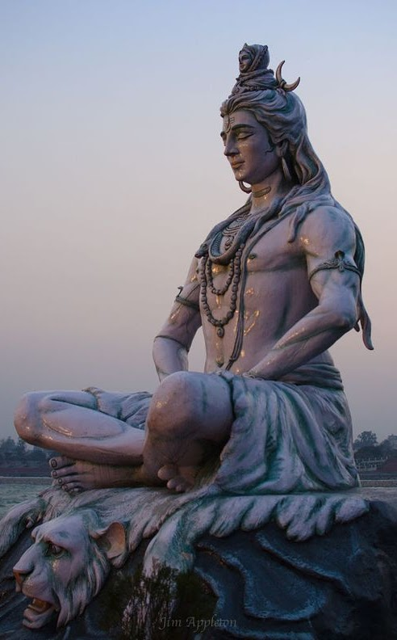

Індійська міфологія

Індійська міфологія виключно різноманітна. У ній є 330 мільйонів божеств. Є боги і богині, духи, особисті боги, домашні боги і боги простору і часу. Є боги для кожної касти і ті, що піклуються про ремісників. Є боги, які охороняють природу, що живуть на деревах і ті, що приймають форму тварин. Деякі захоплені мінералами, деякі - геометричними формами. Крім того, є безліч демонів, у кожного з яких є історія злету і падіння. Чого немає в індійській міфології, так це аналога диявола, верховного демона, який велить іншими злими духами.